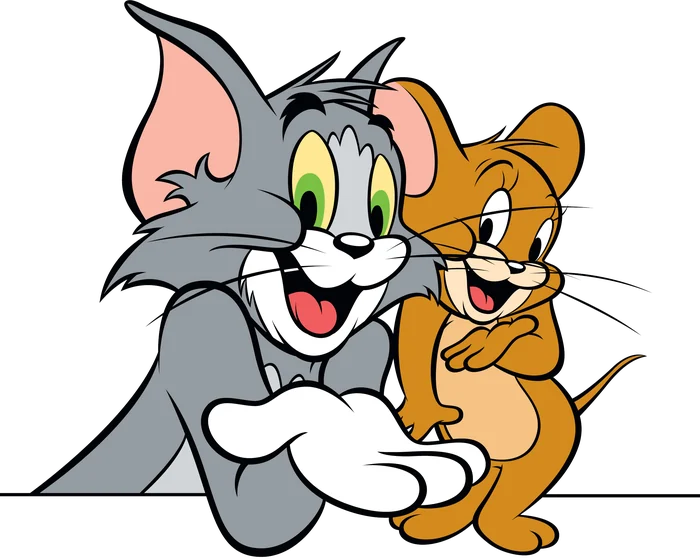
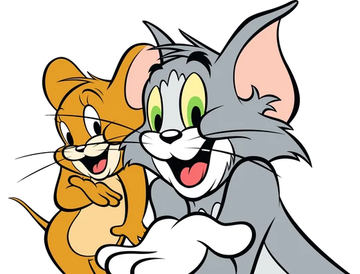
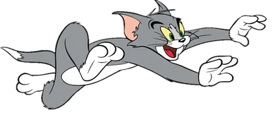
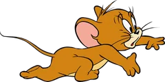
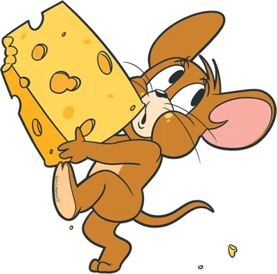
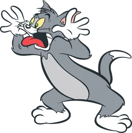
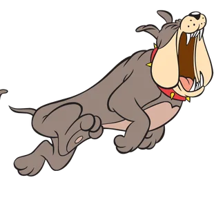
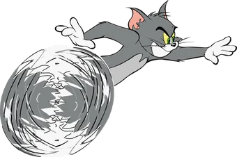

Timo Producciones presenta
Tom y Jerry en…

¡El cumple
de Timo!
¡Timoteo cumple 6!
6







Viernes9Octubre
Entrada · función única
Horario
18:00 a 20:30 h
Lugar
Hakuna Matata FútbolAv. Pedro Ferré 2360
Corrientes